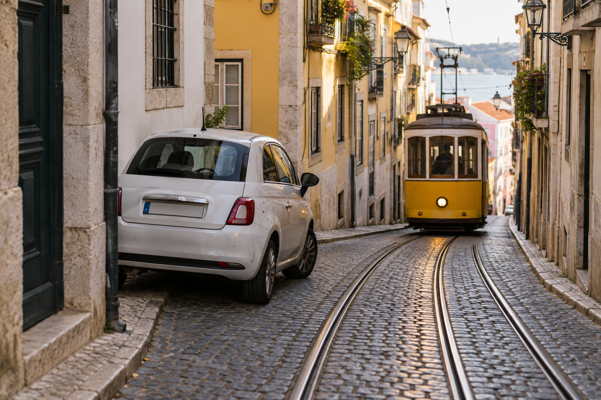

Portugal Travel Mistakes First-Time Visitors Should Avoid
Portugal can look easy to plan because the country is compact and its best-known destinations appear close together on a map. That can lead first-time visitors to add Lisbon, Sintra, Porto, the Douro Valley, and the Algarve to one short trip without thinking about hotel changes, train time, hills, attraction queues, or the pace of each day.
When I review first-time Portugal itineraries for RoamPlans, the biggest problems usually come from small planning choices rather than one major error. Too many stops, the wrong hotel area, unnecessary car rental days, or a packed Sintra schedule can make a good route feel tiring. These mistakes are avoidable once you know where first-time trips usually go wrong.
Portugal Travel Mistakes at a Glance
| Mistake | Better Approach |
|---|---|
| Trying to see too much | Use fewer bases |
| Counting travel days as full sightseeing days | Count usable time |
| Adding the Algarve to a very short trip | Give the region several nights |
| Changing hotels too often | Use Lisbon and Porto as bases |
| Renting a car for every day | Match transport to the route |
| Treating Sintra as a quick stop | Give it a full day |
| Booking accommodation by price alone | Check location and hills |
| Buying transport without checking the exact station | Confirm route details |
| Wearing poor walking shoes | Pack for cobbles and hills |
| Filling every hour | Leave flexible time |
Mistake 1: Trying to See Too Much of Portugal
This is the most common first-trip mistake.
A traveler may start with:
LisbonSintraPortoDouro ValleyCoimbraÉvoraAlgarve
Each place sounds reasonable on its own.
The problem appears when all of them are placed inside seven or ten days.
Every new overnight stop creates more:
- ✓Packing
- ✓Checkouts
- ✓Transport
- ✓Hotel arrivals
- ✓Luggage handling
- ✓Lost sightseeing time
Better Approach
Choose the places that matter most and give them enough time.
For a one-week first trip, Lisbon, Sintra, and Porto already create a strong route.
If you need help building the route before adding stops, use How to Plan a Trip to Portugal: Step-by-Step Guide.
Mistake 2: Counting Every Vacation Day as a Full Sightseeing Day
A seven-night trip does not always give you seven full days.
Your schedule may include:
- ✓Overnight flight
- ✓Arrival formalities
- ✓Airport transfer
- ✓Lisbon-to-Porto train
- ✓Hotel check-in
- ✓Early departure flight
A transfer day can still include sightseeing, but it is rarely equal to a full day.
Better Approach
Separate your trip into:
Full days
Arrival day
Departure day
Transfer days
Then decide how many destinations actually fit.
This gives you a more realistic route before you book anything.
Mistake 3: Adding the Algarve Just Because Portugal Looks Small
The Algarve is in southern Portugal.
It is not a quick side trip from Lisbon or Porto.
Adding it to a short itinerary creates another long transfer and another hotel base.
One rushed Algarve night may give you less than one useful day after travel time.
Better Approach
Add the Algarve when:
- ✓Beaches are a high priority
- ✓You can give it several nights
- ✓The route still leaves enough time for your main cities
If your trip is short, save it for another visit rather than forcing it into the schedule.
Mistake 4: Staying Only One Night in Every Place
One-night stays look efficient on paper.
In reality, they create a repeated cycle:
Check out → travel → find hotel → check in → explore → pack again.
You spend a large part of the trip managing luggage.
Better Approach
Use strong bases.
For example:
Lisbon
- ✓Lisbon sightseeing
- ✓Sintra day trip
Porto
- ✓Porto sightseeing
- ✓Douro Valley day trip if desired
This gives you different experiences without changing hotels every day.
Mistake 5: Renting a Car for the Whole Trip

A car can be very useful in Portugal.
That does not mean you need one from the moment you land.
In Lisbon and Porto, a rental car can create extra concerns such as:
- ✓Parking
- ✓Traffic
- ✓Narrow streets
- ✓Toll planning
- ✓Hotel parking fees
Better Approach
Use the transport that fits each section of the route.
For example:
Lisbon → Porto: train
Lisbon and Porto city days: walking + public transport
Rural areas or wider Algarve exploring: rental car where useful
You can combine transport types in the same vacation.
Mistake 6: Not Learning How Portuguese Tolls Work Before Driving
Portugal has both conventional toll roads and electronic toll systems.
A first-time driver who ignores the toll setup can create unnecessary confusion.
This matters even more with a rental car because the rental company may have its own toll-payment process.
Better Approach
Before driving away, ask:
- ✓How are tolls charged?
- ✓Does the car have an electronic toll device?
- ✓Are there extra rental-company fees?
- ✓How will I pay electronic tolls?
- ✓Is the device already active?
Solve this at pickup rather than trying to understand the system after using a toll road.
Mistake 7: Treating Sintra Like a Two-Hour Lisbon Attraction
Sintra is one of the easiest places to underestimate.
A map may make the main sights look close.
Your actual day can include:
- ✓Train from Lisbon
- ✓Local transport
- ✓Hills
- ✓Walking
- ✓Queues
- ✓Palace visits
- ✓Travel between attractions
Trying to see every major palace can make the day feel like a race.
Better Approach
Treat Sintra as a proper day trip.
Choose the attractions that matter most.
Two well-planned major stops can give you a better day than rushing through four.
Mistake 8: Booking Every Sintra Attraction for the Same Day
This is related to the previous mistake, but the problem is different.
A traveler may buy several timed tickets because each attraction looks essential.
Then one delay affects the rest of the schedule.
Better Approach
Set clear priorities.
Use:
Priority 1: Must-see attraction
Priority 2: Second major attraction
Optional: Extra stop if time and energy remain
A flexible Sintra day is usually easier to manage.
Mistake 9: Booking Lisbon Accommodation Without Checking the Hill
Two Lisbon hotels can appear equally central on a map.
One may sit on an easy route.
The other may require steep streets or stairs every time you return.
This becomes more important when you have:
- ✓Heavy luggage
- ✓Young children
- ✓Limited mobility
- ✓Long sightseeing days
Better Approach
Before booking, check:
- ✓Walking route from public transport
- ✓Street elevation
- ✓Stairs
- ✓Hotel entrance
- ✓Recent guest comments about location
Map distance alone does not tell you how easy the route will feel.
Mistake 10: Making the Same Hotel Mistake in Porto
Porto has a similar issue.
Ribeira sits beside the river, while other parts of central Porto sit higher.
A hotel may be close to the river in distance but involve a steep return walk.
Better Approach
Choose your Porto area based on:
- ✓Walking ability
- ✓Nightlife
- ✓Station access
- ✓River access
- ✓Noise preference
Do not choose a location only because it is beside a famous attraction.
Mistake 11: Wearing the Wrong Shoes
Portugal's historic centers are beautiful, but the streets are not always easy on your feet.
You may walk across:
- ✓Cobbles
- ✓Hills
- ✓Stairs
- ✓Uneven pavement
Poor footwear can affect several days of the trip.
Better Approach
Wear shoes you have already tested on long walks.
Look for:
- ✓Comfortable support
- ✓Good grip
- ✓Stable sole
Do not make the first day in Lisbon the first time you wear new walking shoes.
Mistake 12: Packing Too Much
Large luggage becomes harder to manage when your trip includes trains and several hotels.
You may need to move your suitcase through:
- ✓Stations
- ✓Stairs
- ✓Cobbled streets
- ✓Small hotel entrances
Packing extra clothes for every possible situation rarely improves the trip.
Better Approach
Pack clothes that can be mixed and reused.
For longer trips, plan laundry instead of carrying two weeks of separate outfits.
One manageable suitcase is usually easier than several bags.
Mistake 13: Assuming Portugal Is Always Hot
Portugal is not one climate.
Porto can feel different from Lisbon.
The Algarve can feel different from the north.
Coastal wind can also make a warm day feel cooler.
Better Approach
Check each region on your route before packing.
Bring useful layers instead of planning the whole trip around one national temperature.
The point is not to carry more clothing.
It is to carry the right clothing.
Mistake 14: Assuming Sunny Weather Means Warm Ocean Water
Portugal faces the Atlantic Ocean.
A hot beach day does not guarantee water that feels warm.
Travelers expecting Mediterranean-style swimming temperatures can be surprised.
Better Approach
Separate:
good beach weather
from:
warm swimming water
If swimming matters a lot, research the coastal conditions for your exact destination and dates.
Mistake 15: Booking Every Hour of the Day
A tightly planned schedule can look efficient:
9:00 attraction11:00 museum1:00 lunch reservation3:00 tour5:00 viewpoint7:00 dinner
The problem is that travel rarely runs perfectly.
One long queue can affect the whole day.
Better Approach
Plan one or two priorities.
Then keep nearby options flexible.
A useful city day can be:
Morning: main attraction
Afternoon: neighborhood exploration
Evening: dinner and optional walk
You still have a plan, but the day can adjust.
Mistake 16: Planning a Major Attraction Right After Landing
Travelers arriving from the United States may reach Portugal after an overnight flight.
Even when you land in the morning, your body may not feel ready for a full sightseeing schedule.
You still need to handle:
- ✓Border formalities
- ✓Bags
- ✓Airport transport
- ✓Hotel check-in
- ✓Time difference
Better Approach
Keep arrival day simple.
Use it for:
- ✓Easy walk
- ✓Nearby meal
- ✓Local neighborhood
- ✓Simple viewpoint
- ✓Early sleep
Save your high-priority timed attractions for a full day.
Mistake 17: Choosing Flights Without Looking at the Whole Route
A cheap round-trip Lisbon ticket may look like the obvious choice.
But if your trip ends in Porto, you may need to travel back to Lisbon only to catch the flight.
That adds time and another transport cost.
Better Approach
Compare:
Round trip through Lisbon
against:
Arrive Lisbon / depart Porto
or the reverse.
Judge the full trip cost and travel time, not just airfare.
Mistake 18: Ignoring Train Ticket Rules
Portugal's main rail operator sells different types of train tickets.
For many services, travelers need a valid ticket before boarding.
Urban tickets can also require validation.
Buying the ticket does not always mean you have completed every step needed for travel.
Better Approach
Before using a train, check:
- ✓Correct station
- ✓Correct date
- ✓Correct departure
- ✓Correct train
- ✓Seat where assigned
- ✓Whether validation is required
Do this before reaching the platform.
Mistake 19: Buying the Wrong Train Because Lisbon Has Several Stations
Lisbon does not have one single station for every route.
Your ticket may use a station such as:
- ✓Santa Apolónia
- ✓Oriente
- ✓Rossio
- ✓Cais do Sodré
Going to the wrong station can turn a simple train journey into a stressful one.
Better Approach
Read the exact station name on your ticket.
Then check how long it takes to reach that station from your hotel.
Do not search only for Lisbon train station.
Mistake 20: Assuming You Can Always Buy the Ticket on the Train
This can cause problems.
On many services, you are expected to have a valid ticket before travel.
Exceptions can exist when there is no way to buy a ticket at the departure point, but that should not be your normal plan.
Better Approach
Buy the correct ticket before boarding and validate it when required.
This removes an avoidable problem from the travel day.
Mistake 21: Assuming the Bread and Olives on the Table Are Free
At some Portuguese restaurants, bread, olives, cheese, butter, or other small items may be placed on your table before you order.
This is often called the couvert.
First-time visitors from the United States may assume these items are free.
If you eat them, they can be added to your bill.
Better Approach
Look at what is placed on the table before eating it.
If you do not want the couvert, politely leave it untouched or ask for it to be removed.
This is normal restaurant practice and not automatically a tourist scam.
Mistake 22: Using U.S. Tipping Rules in Portugal
Portugal does not have the same tipping culture as the United States.
You do not need to add a large percentage to every restaurant, café, taxi, and drink bill.
Better Approach
Treat tipping as an extra for good service rather than a fixed U.S.-style requirement.
At restaurants, some travelers leave a small amount or around 5% to 10% when service is good.
Always check the bill before adding anything.
Mistake 23: Assuming Portuguese Is Basically Spanish
Portugal and Spain share the Iberian Peninsula, but Portuguese and Spanish are different languages.
Starting every conversation in Spanish because you assume it is close enough can come across poorly.
Better Approach
Learn a few basic Portuguese words.
Useful examples include:
- ✓Olá: Hello
- ✓Bom dia: Good morning
- ✓Por favor: Please
- ✓Obrigado / Obrigada: Thank you
- ✓Desculpe: Excuse me / Sorry
English is common in many tourism settings, so polite English can also work better than assuming Spanish.
Mistake 24: Expecting Everyone to Speak English
English is widely used in many hotels, restaurants, attractions, and tourism businesses.
That does not mean every person you meet will speak it.
This is more noticeable outside major visitor areas.
Better Approach
Keep a translation app available and learn a few Portuguese phrases.
Also save important information, such as your hotel address, in a form you can easily show someone.
Mistake 25: Paying in U.S. Dollars When a Card Terminal Offers the Choice
A payment terminal or ATM may ask whether you want the transaction charged in:
Euros
or:
U.S. dollars
The dollar option can use a conversion rate provided by the merchant or ATM operator.
That may not be the best rate available to you.
Better Approach
Understand your own bank's foreign transaction rules before the trip.
For many travelers, paying in the local currency, euros, is the simpler choice.
Mistake 26: Carrying Too Much Cash
Portugal uses the euro, but you do not need to carry your entire travel budget in cash.
Losing a large amount of cash can create a much bigger problem than losing one card.
Better Approach
Use a mix of:
- ✓Main payment card
- ✓Backup card
- ✓Small amount of cash
Keep the backup payment method separate from your main wallet.
Mistake 27: Depending on Only One Bank Card
Cards can be:
- ✓Lost
- ✓Blocked
- ✓Damaged
- ✓Rejected by a machine
If one card is your only payment method, a small problem can become a major travel issue.
Better Approach
Carry at least one backup payment option.
Store it separately from your main card.
If your wallet disappears, you should still have access to money.
Mistake 28: Accepting Every ATM Fee Without Checking
Not every ATM has the same fee structure.
Independent machines in tourist areas may offer poor exchange terms or extra charges.
Better Approach
Read the ATM screen carefully before confirming a withdrawal.
Check:
- ✓Withdrawal fee
- ✓Currency conversion
- ✓Final amount
- ✓Your own bank's fee
Cancel the transaction if the terms do not make sense.
Mistake 29: Keeping Your Phone in an Easy-to-Reach Pocket
Your phone may hold:
- ✓Maps
- ✓Train tickets
- ✓Hotel bookings
- ✓Banking apps
- ✓Flight details
- ✓Photos
Losing it can create more problems than losing a normal travel item.
Crowded areas deserve extra awareness.
Better Approach
Keep your phone in a secure pocket or bag when you are not using it.
Pay extra attention in:
- ✓Busy trams
- ✓Train stations
- ✓Tourist streets
- ✓Crowded viewpoints
- ✓Major attractions
Mistake 30: Carrying Your Passport Around Carelessly
Your passport is one of the hardest travel items to replace.
Keeping it loose in a backpack pocket or together with all your money increases the risk of one incident causing several problems.
Better Approach
Keep your passport secure.
Also store:
- ✓Digital copy
- ✓Backup copy
- ✓Emergency contact information
A copy does not replace the original passport, but it can help if the original is lost.
Mistake 31: Ignoring Pickpocket Risk Because Portugal Feels Safe
Feeling comfortable can make travelers less careful.
Busy tourism areas and public transport can still attract opportunistic theft.
Better Approach
Use normal city awareness.
Avoid:
- ✓Open bags
- ✓Wallets in easy back pockets
- ✓Phones left on café tables
- ✓Bags hanging loosely from chairs
You do not need to travel in fear.
You simply need to make your valuables harder to take.
Mistake 32: Leaving Valuables Visible in a Rental Car
A road trip creates a different security problem.
Travelers sometimes leave:
- ✓Passports
- ✓Cameras
- ✓Laptops
- ✓Bags
visible inside the car while stopping at a viewpoint or beach.
Better Approach
Take important valuables with you.
Avoid using the rental car as a visible storage area.
If luggage must remain in the vehicle during a transfer day, keep it out of sight before you arrive at the parking location.
Mistake 33: Booking the Cheapest Rental Car Without Checking the Transmission
Manual cars are common in Europe.
Travelers used to automatic vehicles may book the cheapest option without noticing the transmission type.
Better Approach
Check the booking details carefully.
If you need an automatic car, reserve one specifically.
Automatic vehicles may have:
- ✓Higher rates
- ✓Lower availability
This is a better problem to solve before arrival than at the rental counter.
Mistake 34: Not Checking the Fuel Type Before Driving Away
Putting the wrong fuel into a rental car can create an expensive problem.
The car may use:
- ✓Gasoline
- ✓Diesel
- ✓Electric charging
Better Approach
Ask the rental company exactly what the vehicle uses.
Check the information on the fuel door if available.
Do not guess from the vehicle model.
Mistake 35: Returning the Rental Car Without Understanding the Fuel Policy
Rental agreements may use different fuel rules.
A traveler who assumes the wrong policy can face extra refueling charges.
Better Approach
Before leaving the rental location, confirm:
- ✓Fuel level at pickup
- ✓Required fuel level at return
- ✓Where the nearest suitable fuel station is
- ✓Whether the car needs charging instead
Take a photo of the fuel gauge when you collect the vehicle.
Mistake 36: Driving Into Historic Centers Without Checking Parking
Old city areas were not built around modern cars.
Narrow streets, restricted access, and limited parking can make driving harder than expected.
Better Approach
Before driving into a historic center, check:
- ✓Hotel parking
- ✓Public garages
- ✓Restricted streets
- ✓Walking distance from parking
Sometimes leaving the car outside the busiest center is easier.
Mistake 37: Underestimating Driving Time on Scenic Routes
Road-trip travelers sometimes calculate only the distance.
But scenic travel can include:
- ✓Narrow roads
- ✓Village traffic
- ✓Stops
- ✓Viewpoints
- ✓Parking
- ✓Lunch
A two-hour route on a map may take much longer once you actually travel it.
Better Approach
Do not build the day around perfect driving times.
Give yourself extra time when the route itself is part of the experience.
Mistake 38: Treating the Algarve as One Town
The Algarve is a large region.
Lagos, Faro, Tavira, Albufeira, Portimão, and other places offer different travel experiences.
Booking any hotel labeled Algarve without checking the exact location can put you far from the places you want to visit.
Better Approach
Choose the base first.
Ask what matters most:
- ✓Beaches
- ✓Nightlife
- ✓Quiet atmosphere
- ✓Airport access
- ✓Public transport
- ✓Road trips
Then choose accommodation.
Mistake 39: Choosing an Algarve Base Without Thinking About Transport
A hotel may look perfect until you discover that reaching your planned beaches requires long taxi rides or a rental car.
Better Approach
Before booking, check how you will travel from your base to your main activities.
If you do not want to drive, choose a town that works with your public transport and walking plans.
Mistake 40: Trying to Visit Several Algarve Towns Every Day
The Algarve gives travelers many places to choose from.
That can create another checklist trip.
Driving from town to town all day may leave little time for beaches or coastal scenery.
Better Approach
Use one area as your focus each day.
Allow time for:
- ✓Beach
- ✓Lunch
- ✓Coastal walk
- ✓One or two nearby stops
You do not need to collect every Algarve town in one vacation.
Mistake 41: Ignoring Cliff and Ocean Safety
Portugal's coastal cliffs create impressive views.
They can also be dangerous.
Unstable edges, strong waves, changing tides, and rough water should be treated seriously.
Better Approach
Stay behind barriers and warning signs.
Do not move close to cliff edges just for a photo.
At beaches:
- ✓Follow local warnings
- ✓Pay attention to flags
- ✓Watch wave conditions
- ✓Avoid unsafe cliff areas
A good viewpoint is not worth taking an unnecessary risk.
Mistake 42: Leaving Beach Items Unattended
Phones, wallets, cameras, and bags can become easy targets when left alone while everyone enters the water.
Better Approach
Take only what you need to the beach.
If traveling with other people, arrange who watches valuables.
Avoid bringing your passport or large amounts of money unless necessary.
Mistake 43: Assuming Every Restaurant Serves Dinner at U.S. Times
Eating schedules may feel different from what some U.S. visitors normally follow.
Restaurants can also have different opening days and service hours.
Better Approach
Check restaurant hours before building an evening around one place.
If a specific restaurant matters to you, confirm:
- ✓Opening day
- ✓Dinner time
- ✓Reservation need
Do not assume every restaurant operates continuously from afternoon through evening.
Mistake 44: Eating Only Beside Major Attractions
Restaurants beside famous squares and visitor sites can be convenient.
But using them for every meal can increase your food spending and reduce the variety of places you try.
Better Approach
Walk beyond the busiest tourist streets when you have time.
Mix:
- ✓Convenient meals
- ✓Local cafés
- ✓Bakeries
- ✓Restaurants in normal neighborhoods
Convenience has value, but it does not need to control every meal.
Mistake 45: Assuming Every Famous Food Must Be Tried in One City
Portuguese food varies by region.
A traveler may build a long food checklist without considering where dishes are most strongly associated.
Better Approach
Try regional food where it fits naturally.
For example, Porto offers a different food experience from Lisbon or the Algarve.
Let the route guide some of your food choices.
Mistake 46: Forgetting That Sundays and Holidays Can Change Plans
Opening hours can change on:
- ✓Sundays
- ✓Public holidays
- ✓Local holidays
Smaller businesses may operate differently from large tourist attractions.
Better Approach
Check opening hours for anything that would be difficult to replace.
Do this especially for:
- ✓Markets
- ✓Small museums
- ✓Special restaurants
- ✓Shops
- ✓Regional attractions
Do not build an entire day around an opening time you have not checked.
Mistake 47: Trusting Old Opening Hours
Travel information becomes outdated.
A blog post, map listing, or old screenshot may no longer match current hours.
Better Approach
Recheck important opening times shortly before the visit.
This matters most for:
- ✓Timed attractions
- ✓Restaurants
- ✓Transport
- ✓Seasonal businesses
You do not need to recheck every café.
Focus on places that affect the day's structure.
Mistake 48: Ignoring Local Events When Choosing Dates
A major festival or event can change:
- ✓Hotel prices
- ✓Street access
- ✓Crowds
- ✓Restaurant availability
- ✓Public transport
This can be positive or negative depending on what you want.
Better Approach
Check your city dates before finalizing accommodation.
If a major event is happening, decide whether it is:
part of the experience you want
or:
a reason to stay elsewhere
Mistake 49: Expecting the Same Pace in Lisbon and the Algarve
A city trip and a coastal trip work differently.
In Lisbon, you may spend the day moving between sights.
In the Algarve, constantly scheduling attractions can defeat the reason you went to the coast.
Better Approach
Let different regions have different rhythms.
Do not force the same sightseeing schedule across the entire country.
Mistake 50: Planning the Trip Around Social Media Photos
A beautiful photo can make a place look essential.
It does not tell you:
- ✓Travel time
- ✓Queues
- ✓Weather
- ✓Parking
- ✓How long the visit takes
- ✓Whether it fits your interests
Better Approach
Ask what the place adds to your trip.
A destination belongs in your route because you want the experience, not because you feel required to reproduce someone else's photo.
Mistake 51: Booking Timed Attractions Too Close Together
Timed tickets can help you avoid missing a popular attraction.
The problem begins when you book several of them with almost no space between visits.
Walking time, queues, transport delays, and longer-than-expected visits can affect the rest of the day.
Better Approach
Leave a buffer between important reservations.
One main timed attraction in the morning and another later in the day is usually easier to manage than several back-to-back bookings.
Mistake 52: Not Checking Which Attractions Need Advance Tickets
Some popular places may have limited entry times or stronger demand on certain dates.
Turning up without checking can leave you with:
- ✓Long waits
- ✓Poor time slots
- ✓Sold-out entry
- ✓A changed day plan
Better Approach
Before travel, identify only the attractions that matter most to you.
Check those first.
Do not pre-book every small museum simply because advance booking exists.
Mistake 53: Arriving Late for a Timed Ticket
A timed reservation does not always guarantee entry at any point later in the day.
A missed time slot can affect the rest of your schedule.
Better Approach
Check:
- ✓Entry time
- ✓Exact entrance
- ✓Travel time
- ✓Whether security checks are required
Aim to arrive with enough time to find the correct entrance without rushing.
Mistake 54: Confusing Travel Time With Door-to-Door Time
A train may take three hours.
Your real transfer takes longer.
You still need to:
- ✓Check out
- ✓Reach the station
- ✓Find the platform
- ✓Travel
- ✓Leave the station
- ✓Reach the next hotel
- ✓Store luggage or check in
Better Approach
Plan transfers from hotel door to hotel door.
This gives you a much more realistic idea of how much sightseeing time remains.
Mistake 55: Booking a Very Early Train After a Late Night
A cheap early departure may look efficient.
But if the previous evening includes dinner, nightlife, or a late event, that train can make the next day harder.
Better Approach
Match transport times to your real travel style.
Saving a small amount on a 6:00 a.m. departure is not always worth losing sleep and paying for an early taxi.
Mistake 56: Assuming the Cheapest Ticket Is Always Best
Lower-priced transport can come with tradeoffs.
These may include:
- ✓Less flexibility
- ✓Different departure time
- ✓Longer journey
- ✓Different station
- ✓Restrictions on changes
Better Approach
Compare the full ticket conditions.
Sometimes paying slightly more for a better departure time protects several useful hours of the trip.
Mistake 57: Not Checking Airport Location and Transfer Time
Seeing Lisbon, Porto, or Faro on a flight search does not mean you will step directly into the city center.
Airport transfers still need time.
Better Approach
Before booking your first or final day, calculate:
hotel → airport
or:
airport → hotel
Then add check-in, baggage, and border time where relevant.
Do not plan a major attraction too close to your flight.
Mistake 58: Treating Departure Day Like a Normal Sightseeing Day
A late flight may give you several hours.
But you still need to think about:
- ✓Hotel checkout
- ✓Luggage
- ✓Airport transfer
- ✓Security
- ✓Boarding time
Better Approach
Use departure day only for easy nearby activities.
Avoid anything that could leave you far from your luggage or airport route.
Mistake 59: Forgetting to Confirm Luggage Storage
Travelers often assume every hotel will store bags before check-in or after checkout.
Many do, but you should not build the day around that assumption.
Better Approach
Ask the property before arrival.
If storage is unavailable, identify another option before you reach the city.
This is especially useful on train-transfer days.
Mistake 60: Choosing Accommodation With No Thought About Noise
A central location can be convenient during the day and noisy at night.
This matters near:
- ✓Bars
- ✓Nightlife streets
- ✓Busy squares
- ✓Major roads
Better Approach
Read recent guest comments specifically for noise.
A beautiful room has less value if you cannot sleep.
If you are a light sleeper, location should include both access and nighttime conditions.
Mistake 61: Ignoring Air Conditioning During Hot-Weather Trips
A central hotel can still become uncomfortable if the room does not stay cool.
This matters more during hotter periods.
Better Approach
If air conditioning matters to you, confirm it before booking.
Do not assume every historic property has the same cooling setup as a modern hotel.
Mistake 62: Ignoring Elevators When Traveling With Heavy Luggage
Some older buildings have:
- ✓Small elevators
- ✓No elevator
- ✓Stairs before the elevator begins
This can become a problem with large suitcases.
Better Approach
Check property details before booking.
If you have heavy luggage or mobility needs, confirm how you will actually reach the room.
Mistake 63: Assuming Every Viewpoint Is Easy to Reach
Portugal has many famous viewpoints.
Some require more uphill walking than the map suggests.
Better Approach
Check the route before setting out.
Use public transport or a taxi when it protects your energy for the rest of the day.
You do not need to walk every hill to experience the city properly.
Mistake 64: Spending Too Much Time Chasing Viewpoints
One viewpoint can be excellent.
Visiting six similar viewpoints in one day can begin to replace other experiences.
Better Approach
Choose a few that fit naturally into your route.
Do not cross the city only to collect another similar photo.
Mistake 65: Treating Every Tram as a Sightseeing Ride
Lisbon's historic trams are famous, but they are also part of the city's transport system.
Popular routes can become crowded.
Better Approach
Use a tram because it fits your route or because the ride itself matters to you.
Do not spend a large part of the day waiting simply because a specific tram appears on every social media list.
Mistake 66: Blocking Narrow Streets or Transport for Photos
Historic areas can have narrow sidewalks and busy local streets.
Stopping suddenly for photos can get in the way of residents and other travelers.
Better Approach
Step aside before taking a photo.
Give local people space to move.
The city is a place where people live, not just a visitor backdrop.
Mistake 67: Being Too Loud in Residential Areas at Night
Popular neighborhoods can remain busy late into the evening.
That does not mean every street is an entertainment area.
Better Approach
Keep noise lower near homes and accommodation entrances.
This matters especially when returning from restaurants or nightlife late at night.
Mistake 68: Entering Religious Sites Without Checking Dress Expectations
Portugal has many churches and religious buildings.
Casual sightseeing clothing is often fine, but very revealing beachwear may not fit the setting.
Better Approach
Keep a light layer available if religious sites are part of your day.
Dress in a way that respects the place you are entering.
Mistake 69: Assuming Every Church Is Just Another Attraction
Religious buildings may still be active places of worship.
A service, prayer, funeral, or private event may be taking place.
Better Approach
Keep your voice low and follow signs about:
- ✓Photography
- ✓Restricted areas
- ✓Services
- ✓Visitor access
Do not interrupt people using the building for its original purpose.
Mistake 70: Not Checking Museum Closing Days
Museums and attractions do not all close on the same day.
A traveler can build an entire Monday or Tuesday around places that are not open.
Better Approach
Check official opening information for your priority sites before assigning them to a specific day.
Do this when building the itinerary, not after reaching the entrance.
Mistake 71: Assuming Every Day Trip Needs a Tour
Tours can be useful when they solve a real transport or planning problem.
They are not required for every nearby destination.
Better Approach
Before booking, compare:
- ✓Independent transport
- ✓Tour cost
- ✓Time available
- ✓Flexibility
- ✓What the guide adds
Choose the tour when it makes the day better, not simply because it is heavily advertised.
Mistake 72: Booking a Tour That Repeats What You Already Planned
A food tour, city tour, boat trip, and day tour can be excellent.
The problem is paying several times for very similar coverage.
Better Approach
Read the route before booking.
If a tour covers places already included in your independent sightseeing day, decide whether the guide's added value justifies the cost and time.
Mistake 73: Leaving All Restaurant Decisions Until You Are Hungry
You do not need to reserve every meal.
But searching for food only after everyone is tired and hungry can lead to poor choices.
Better Approach
Save a few options near each main area.
Then choose based on your mood and schedule.
This gives you flexibility without starting every meal search from zero.
Mistake 74: Overplanning Famous Restaurants
The opposite problem also happens.
Travelers can build whole days around several restaurant reservations.
That reduces flexibility and can make meals feel like appointments.
Better Approach
Reserve only the restaurants that matter most.
Let some meals happen naturally.
Mistake 75: Not Leaving Time for Normal Portugal
A first-time itinerary can become a list of palaces, churches, viewpoints, and tours.
That leaves no room for:
- ✓Coffee
- ✓Markets
- ✓Small streets
- ✓Local neighborhoods
- ✓Slow meals
- ✓Sitting by the river
Better Approach
Leave some unscheduled time.
A trip does not need a ticket attached to every memorable experience.
Mistake 76: Depending Completely on Mobile Data
Your phone may lose signal, run out of battery, or have roaming problems.
If every ticket, hotel address, and route exists only online, a small technical issue becomes stressful.
Better Approach
Save key information offline.
Keep screenshots or downloaded copies of:
- ✓Hotel addresses
- ✓Train tickets
- ✓Flight information
- ✓Important reservations
You do not need to print everything.
You just need a backup.
Mistake 77: Letting Your Phone Battery Reach Zero During a Travel Day
Navigation, photos, mobile tickets, and data use can drain a battery quickly.
This matters more on transfer days.
Better Approach
Charge your phone overnight.
Carry a charged portable battery if you expect heavy use.
Keep your charging cable easy to reach.
Mistake 78: Forgetting the European Plug Adapter
Travelers from the United States normally need a European plug adapter in Portugal.
Discovering this late at night with an almost-dead phone is avoidable.
Better Approach
Pack the adapter in your carry-on or personal bag.
Do not place your only adapter inside checked luggage.
Mistake 79: Assuming a Plug Adapter Changes Voltage
A plug adapter changes the shape of the connection.
It does not automatically change electrical voltage.
Some U.S. appliances may not support Portugal's electrical system.
Better Approach
Check the voltage label on items such as:
- ✓Hair dryers
- ✓Straighteners
- ✓Curling irons
- ✓Electric grooming tools
Do this before packing them.
Mistake 80: Forgetting to Check Passport and Entry Rules Again
Travel rules can change.
Information you read months before booking may not be the final rule when you travel.
Better Approach
Recheck current entry requirements shortly before departure.
Pay attention to:
- ✓Passport validity
- ✓Short-stay rules
- ✓Current European border systems
- ✓Any travel authorization that applies at the time
Use current official information for entry decisions.
Mistake 81: Entering Passport Details Incorrectly
A typo in a flight or travel document can create unnecessary trouble.
Better Approach
Check:
- ✓Full name
- ✓Passport number
- ✓Date of birth
- ✓Expiry date
Make sure important bookings match the passport you will actually carry.
Mistake 82: Traveling Without Any Backup for Important Documents
Keeping every document only on your phone creates one point of failure.
Better Approach
Keep:
- ✓Digital passport copy
- ✓Emergency contact
- ✓Hotel information
- ✓Insurance details if applicable
in more than one secure place.
Copies do not replace original documents, but they can help if something goes wrong.
Mistake 83: Not Saving Portugal's Emergency Number
In an emergency, you do not want to search for the correct number.
Better Approach
Save:
112
This is the European emergency number used for urgent police, ambulance, and fire assistance.
Mistake 84: Assuming Travel Insurance Covers Everything
Travel insurance policies vary.
A policy may have:
- ✓Coverage limits
- ✓Exclusions
- ✓Deductibles
- ✓Conditions for cancellation
Better Approach
Read the actual policy.
Know what is covered before relying on it.
Do not judge a policy only by its name or price.
Mistake 85: Ignoring Your Own Physical Pace
A route that works for one traveler may be exhausting for another.
Portugal can involve long walking days, hills, heat, and stairs.
Better Approach
Plan around your real pace.
Add:
- ✓Breaks
- ✓Public transport
- ✓Shorter days
- ✓Fewer attractions
when needed.
There is no prize for returning to your hotel exhausted every night.
Mistake 86: Refusing to Change the Plan
Weather changes.
Trains can be delayed.
You may feel tired.
You may like one place more than expected.
Better Approach
Keep the main structure but allow smaller plans to move.
A flexible itinerary is usually stronger than one that fails when a single detail changes.
Final First-Time Portugal Mistake Check
Before departure, look at your itinerary once more.
Ask:
Route
- ✓Are there too many bases?
- ✓Are any stays only one night without a strong reason?
- ✓Is there unnecessary backtracking?
Transport
- ✓Do I know my exact train stations?
- ✓Have I checked toll arrangements if driving?
- ✓Do I need the rental car during city stays?
Hotels
- ✓Have I checked hills?
- ✓Noise?
- ✓Luggage access?
- ✓Air conditioning if needed?
Activities
- ✓Are timed tickets too close together?
- ✓Have I left flexible time?
- ✓Am I trying to see too much in Sintra?
Money
- ✓Do I have a backup card?
- ✓Am I carrying too much cash?
- ✓Do I understand card currency choices?
Phone and Documents
- ✓Are important bookings available offline?
- ✓Is my phone charging setup ready?
- ✓Have I checked current entry requirements?
Daily Pace
- ✓Are the first and final days realistic?
- ✓Do I have time for meals and breaks?
- ✓Does the itinerary match my actual walking ability?
If several answers make you uncomfortable, change the plan before the trip.
- ↗
- ↗
- ↗
Frequently Asked Questions
What is the biggest mistake first-time visitors make in Portugal?
Trying to visit too many places in too little time is one of the biggest problems. Fewer bases usually give you more useful sightseeing time and fewer hotel transfers.
Do first-time visitors need a rental car in Portugal?
Not for every route. Lisbon, Sintra, and Porto can work well with trains and public transport. A car becomes more useful for rural areas, wider Algarve travel, and some road trips.
Is Sintra easy to visit in a few hours?
It is better to treat Sintra as a full day if it is important to you. Transport, hills, queues, and travel between major attractions take time.
Should I stay one night in the Algarve?
You can, but it gives you little useful time after arrival and before departure. Several nights make more sense if the Algarve is an important part of the trip.
Do I need to tip like I do in the United States?
No. Portugal's tipping culture is different from the United States. A small tip may be left for good service, but large U.S.-style percentage tipping is not automatically expected everywhere.
Is bread free at restaurants in Portugal?
Do not assume it is. Bread, olives, cheese, or similar items placed on the table may be part of the couvert and can be charged if consumed.
Is it better to use cash or cards in Portugal?
Use a mix. Cards are useful for many purchases, while a small amount of cash provides a backup for smaller payments.
Is Portugal difficult to walk around?
Distances can be manageable, but Lisbon and Porto include hills, cobbled streets, and stairs. Comfortable footwear and realistic daily pacing make a large difference.
Can I use Spanish instead of Portuguese in Portugal?
Portuguese is the country's language. Learning a few basic Portuguese words or using polite English in tourism settings is better than assuming Spanish is the same language.
Should I book every Portugal attraction before traveling?
No. Book the high-priority places where advance entry matters. Leave smaller attractions and normal sightseeing flexible.
Conclusion
When I review a first Portugal itinerary, I look less for one dramatic mistake and more for the small decisions that can slowly make the trip harder: too many hotel changes, unrealistic transfer days, poor footwear, badly timed tickets, or a rental car that adds more work than value. Fixing those details before departure usually improves the trip without requiring a bigger budget.
A good first visit to Portugal should feel manageable. Give important places enough time, check the details that can affect your day, and leave room to change plans when needed. Avoiding these mistakes is less about following strict travel rules and more about protecting your time, energy, and attention for the places you actually came to experience.